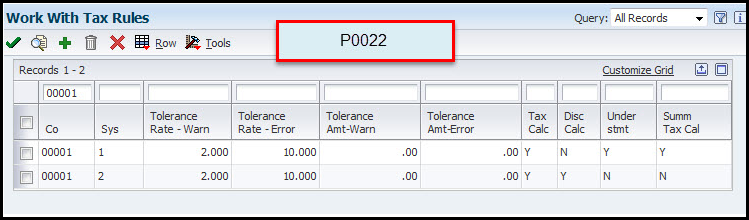

This document discusses the post process for Non-Purchase Order Related Accounts Payable Vouchers within JD Edwards EntepriseOne Financial Management.
Scope
This document is intended for users who are posting Voucher Batches in the JD Edwards EnterpriseOne system.
Details
Overview
When you use the General Ledger Post program (P09801) to post vouchers, the system creates the automatic entries for the vouchers according to the AAIs that you set up, and the processing options that you set up. The General Ledger Post program selects the unposted transactions for the selected batch from the Accounts Payable Ledger table (F0411). Next, the program creates transactions for automatic offset amounts. It also creates other related entries, such as taxes and intercompany settlements. The automatic offset amount is a debit or credit to the A/P trade account and is controlled by the AAI item PC. The program uses the company number and the G/L offset from each voucher to locate the AAI item PC. This item contains the offset account to which you are posting.
During the post process, the system retrieves the following information for the automatic offset:
Automatic offset method. This method is based on the offset method in A/P Constants.
Document type. The document type is AE (automatic entry) and includes intercompany settlements and automatic offsetting entries for A/P and A/R.
Note - Although posting out-of-balance batches prevents the system from creating intercompany settlements, posting out-of-balance does create AE document types for A/P and A/R.
Document number. This number is based on the offset method in the A/P constants. If you post in detail (Offset Method Y), an offset document is created for each document number. When you post the document number in batch (Offset Method B), the document number corresponds to the batch number.
Account description/explanation, such as:
Accounts Payable Trade/Post Offset by Batch V (batch number).
Accounts Payable Trade/Post Offset by Doc PV (voucher number).
Post Failure (Out Of Balance) Troubleshooting Knowledge Reference
There may be times when running into posting batches that you need help troubleshooting. Oracle Software Support offer some suggestions on how to troubleshoot these issues. Refer to:
Note - In case of spec corruption of the General Ledger Post (R09801) UBE, it is recommended to try building and deploying an update package of the R09801 template and all the associated versions to the server (Doc ID 1369078.2). This would refresh the specification on the server.
AP Voucher Batch
When you create a voucher you update the AP Ledger table (F0411) and General Ledger table (F0911) before posting the batch. After you post the batch, the post code for the AP ledger, if successful, should appear as D and the General Ledger post code, if successful, should appear as P and a AE entry is created updating your AP trade account.
General Ledger Post (R09801) Processing Options
Processing Option Tab
Processing Option Choice(s)
Processing Option Explanation
Print
1. Account Format
Specifies the account format that is displayed on the General Ledger Post (R09801) PDF report.
2. Print Error Messages
Determines if error messages are printed on the General Ledger Post (R09801) PDF. If left blank, error messages are only sent to the Work Center (P012503).
Version
1. Detail Currency Restatement Version
Determines the version of the Detailed Currency Restatement (R11411) program that is used to create currency restatement entries. If left blank, the program does not run and detailed currency restatement entries are not created.
2. Fixed Asset Post Version
Determines the version of the Fixed Asset Post (R12800) program that is used to create fixed asset entries. If left blank, the program does not run and fixed asset entries are not created.
3. 52 Period Post Version
Determines the version of the 52 Period Accounting Post program (R098011) that the system uses to update the Account Balances (F0902) table and the Account Balances - 52 Period Accounting (F0902B) table. If left blank, the program does not run and these tables are not updated.
4. Create Burdening Transactions Version (R52G11)
This option is not valid for AP and AR posting.
Edits
1. Update Transaction
Determines if the Account ID (data dictionary item AID), Company (data dictionary item CO), Fiscal Year (data dictionary item FY), Period Number (data dictionary item PN), Century (data dictionary item CTRY), and Fiscal Quarter (data dictionary item FQ) are updated on unposted records in the General Ledger (F0911). The system updates these values as follows:
The Account ID (AID) and Company (CO) are updated using the value in the Account Number (data dictionary item ANI) field.
The Fiscal Year (FY), Period Number (PN), and Century (CTRY) fields are updated using the value in the G/L Date (DJG).
The Fiscal Quarter (FQ) field is set to blank.
Taxes
1. Update Tax File
Determines if the Taxes table (F0018) is updated when posting transactions with tax information.
2. Update VAT Discounts
Determines if any tax amount fields should be adjusted during posting. The system adjusts the tax amount fields only for transactions with tax explanation code V. To use this processing option, tax rules must be configured for tax on gross including discount and discount on gross including tax.
3. Update VAT Receipts and Write Off
Not used on Accounts Payable side.
Process
1. Explode parent item time
This option is not relevant for posting AP and AR batches, it only applies to posting T (Equipment Time Entry) batches.
Cash Basis
1. Units Ledger Type
Determines the Units Ledger Type the system uses for cash basis entries. The value in this option must be a valid ledger type from the UDC table 09/LT (Ledger Types). If left blank, the system uses the default ledger type ZU.
2. Create Cash Basis Entries Version
Determines the version of the Create Cash Basis Entries (R11C850) program to run. This program is run after the post completes. If left blank, the program does not run and cash basis entries are not created.
Offset Method Options
Automatic Offset Method Y (Detailed) - If you use offset method Y, the posting process creates one offset for each document, even if the invoice document contains both positive and negative pay items. Note. (FRA) Users in France should use offset method Y because it maintains the correct separate debit and credit balances, even if positive documents (invoices) and negative documents (credit memos) are included in the same batch.
Automatic Offset Method S - If you use offset method S, the posting process creates one offset for each pay item, including discounts and tax. Method S creates multiple records in the General Ledger table, but maintains the correct debit and credit balances within the French legal system. This offset method creates a large number of automatic entries, which considerably increases the size of the General Ledger table. In this example, the batch includes an invoice with two items: one for 10,000, and one for 5,000. The batch also includes a credit memo with two items: one for 3,000, and one for 1,000. The posting process created four automatic entries: debits of 10,000 and 5,000 to offset both items on the invoice, and credits of 3,000 and 1,000 to offset both items on the credit memo.
Automatic Offset Method B - When you use offset method B, the system creates a cumulative automatic entry that does not include separate debit and credit totals. Note. (FRA) If offset method B is used to post transactions in France, procedures should be established to control the entry of different types of transactions, such as invoices and debit notes, in the same batch for posting. Although it is a common business practice, businesses in France are not legally required to provide a detailed journal to justify the offset to the bank account for each payment or receipt. If multiple payments and receipts are made on the same bank account, printing one cumulative entry for the bank account is acceptable. If you use offset method B, you can use the Transaction Journal to justify the centralized automatic entries that the system creates when you run the General Journal Report. In this example, the batch includes an invoice with two items: one for 10,000, and one for 5,000. The batch also includes a credit memo with two items: one for 3,000, and one for 1,000. The posting process created one automatic entry: a debit of 11,000 to offset all items. The system uses the batch number as the document number of the automatic offset.
Key to Method Used
This table shows the type of journal entry that the system creates according to the settings in the General Accounting and Accounts Payable Constants (fast path 9K or 4K).
Intercompany (G/A Constants
Offset Method
Journal Entry Creation Method (Summary or Detail)
Journal Entry Create (F0911)
1 (Hub)
B
D
Detail
1
Y
D
Detail
1
S
D
Detail
2 (Detail)
B
D
Detail
2
Y
D
Detail
2
S
D
Detail
3 (Configured Hub)
B
D
Error (not allowed)
3
Y
D
Detail
3
S
D
Detail
1
B
S
Summary
1
Y
S
Detail
1
S
S
Detail
2
B
S
Summary
2
Y
S
Detail
2
S
S
Detail
3
B
S
Error (not allowed)
3
Y
S
Detail
3
S
S
Detail
Offset Method:
Y = One automatic entry offset per document, regardless of the number of line items
S = One automatic entry per pay item
B = One automatic entry per batch
Note: For Accounts Receivable, the Offset method can only be set at the company 00000 level, because it regulates how transactions are created in the F0911. This in turn has an effect on intercompany settlements, and on reconciling transactions. For that reason, you can't have one company with batch offset and another with detail offset.
Posting AP Vouchers (R09801)
When you use the General Ledger Post program (R09801) to post vouchers, the system creates the automatic entries for the vouchers according to the AAIs that you set up, and the processing options that you set up. The General Ledger Post program selects the unposted transactions for the selected batch from the Accounts Payable Ledger table (F0411). Next, the program creates transactions for automatic offset amounts. It also creates other related entries, such as taxes and intercompany settlements. The automatic offset amount is a debit or credit to the AP Trade Account and is controlled by the AAI item PC. The program uses the company number and the GL Offset from each voucher to locate the AAI item PC. This item contains the offset account to which you are posting.
Post Process
When a voucher is created, the system writes records to the Accounts Payable Ledger (F0411) and the General Ledger table (F0911). Posting these records updates the Account Balances (F0902) table to reflect the new transaction. When a voucher is posted, the system:
Confirms the A/P Ledger and General Ledger per Document Number that they balance; and then
Updates the Posted Code (POST) to P (Posted) for all corresponding records in the General Ledger (F0911); and
Creates the offset to the AP Trade Account (document type AE) that is defined in the corresponding Automatic Accounting Instruction (AAI PC); and
Updates the Account Balance (F0902); and
Updates the voucher's Posted Code (data dictionary item POST) to D (Posted) in the Accounts Payable Ledger (F0411); and
Updates the Batch Status (data dictionary item IST) to D (Posted) in the Batch Control Records (F0011) table.
Note - Additional processes are done depending on if your Voucher includes these:
Creates automatic entries to the Intercompany Account for the appropriate companies, (if applicable).
Creates adjusting entries to the tax account, (if applicable).
Updates the Taxes (F0018), (if applicable).
Posting to Prior Period (R09801)
Occasionally, batches must be posted to a closed period that is several months back or even in a prior year without affecting financial statements or reports that have been processed for the closed period or year. This document provides steps to posting batches to a prior closed period or year. The process described has a zero dollar effect on the General Ledger balances for the prior period or year and updates the current period with the batch balances.
Note: It is very important these steps are followed when all other users are out of the system because the current period for posting is affected. The Posting Edit Code (data dictionary item PEC) of the trade account may also be a factor.
Steps to Post to Prior Period
These steps take into account the following example, please adjust instructions to fit your specific case:
Example: A voucher was created and posted with a GL Date (data dictionary item DGJ) of 10/01/2001. Using the fiscal date pattern of `R' for a regular calendar year this would be period 10. The business process requires that the entries be entered in November (period 11) instead of October. Because the GL Date (DGJ) of a voucher cannot be changed, the steps provided in this document must be followed.
Open Work with Companies (P0010) on the Organization & Account Setup (G09411) menu.
Locate the company or companies involved in the batch that needs posting, including companies involved in the GL Distribution of the voucher or payment.
Change the Current Period for General Accounting, Accounts Payable and Accounts Receivable modules for each of the companies found in step 2 back to period 10 (October).
After modifying the Current Period, log out of the system. This step is necessary because the information in this application is cached.
Log back in.
Post the batch.
Open Revise Single Account (P0901) on the Organization & Account Setup menu (G09411) and verify that the Posting Edit Code (data dictionary item PEC) allows manual entry to the affected trade account. In the standard setup for a trade account, the Posting Edit Code (PEC) is typically set to `M' (machine-generated transactions only). If this is the case, change the value to blank. Changing this value will temporarily allow all postings to this account.
In Standard Journal Entry (P0911) on the Journal Entry, Reports, Inquiries (G0911) menu, enter a reversing entry with an October GL Date (DGJ). This entry should offset the original entries posted for the original record. Verify that the Reverse radio button is checked. By marking the reverse radio button, the system automatically creates a reversing entry on the first day of the next period. In this case, the reversing entry will be created for 11/01/01. The net effect of these entries is $0. The journal entry should look have information in the F0911 as follows:
AP Trade XX (Debit)
Expense XX (Credit).
Post the Journal Entries. Use data selection to specify the batch number.If the Posting Edit Code (PEC) was changed in Step 7, change it back to 'M' using Review and Revise Accounts (P0901).
In Company Names and Numbers, set the Current Period back to 11 (November) for all Modules. Because this information is cached, remember to log off so the change takes effect.
Posting to Prior Year (R09801)
Occasionally, batches must be posted to a closed period that is several months back or even in a prior year without affecting financial statements or reports that have been processed for the closed period or year. This document provides steps to posting batches to a prior closed period or year. The process described has a zero dollar effect on the General Ledger balances for the prior period or year and updates the current period with the batch balances.
Steps to Post to a Prior Year
Identify the GL Dates (data dictionary item DGJ) and Companies (data dictionary item CO) included in the unposted batch.
Using Work with Companies (P0010), determine the fiscal period and fiscal year corresponding to the batch's GL Dates.
Determine a time when either dates or constants may be changed to allow for prior period postings. This process should be run outside of business hours because it requires that no other batches are created or posted.
Determine the best method to use for posting the problem batch and make necessary change. There are two possible options:
In Work with Companies (P0010), change the affected companies' Accounts Payable, Accounts Receivable and General Ledger periods and fiscal year (if necessary) to the earliest periods and fiscal years identified in Step 2.
If the unposted batch is in the current fiscal year, change the value of the Allow PBCO Postings (data dictionary item PBCO) field in the General Accounting Constants (P0000) to Y. This modification allows updates to prior periods without having to change the dates for each company.User must log out and back in for the change to take effect.
Approve and post the batch. Retain the PDF of the General Ledger Post (R09801) generated during the post. It lists all journal entries created in the General Ledger (F0911) for the batch.
Adjusting Amounts to Reflect in Current Period
After a batch is posted to a prior period, these amounts need to be removed from the prior period and included in the current period. To do so, follow the steps below.
Determine if any of the GL Accounts listed on the PDF need the Posting Edit Code (data dictionary item PEC) updated to allow manual journal entries:
Using Review and Revise Accounts (P0901), inquire on the account(s).
If the Posting Edit Code (PEC) is set to 'M' (machine-generated transactions only), temporarily change it to blank.
Go to Standard Journal Entry (P0911).
Create a Journal Entry with the amounts opposite of the original entry and the account numbers are the same as above, for the prior period in question.
Repeat Step 3 for every entry created by the post report.
Post the manual journal entries while the prior period is still open. The prior period should have a zero net change to the General Ledger and all batches should be posted.
After the batch is posted, revert back to the current period by either of the two methods:
In Work with Companies (P0010) change the affected companies' Accounts Payable, Accounts Receivable and General Ledger periods and fiscal year (if necessary) back to the current period and year.
If the Allow PBCO Postings (PBCO) field in the General Accounting Constants (P0000) is Y, change it back to N. Log out and log back in for change to take effect.
Go back into Standard Journal Entry (P0911) and inquire on the manual journal entries created in Step 3.
Void all manual journal entries, using the current period.
Approve and post the batch.
Reverse Step 1 by changing the Posting Edit Code (PEC) for all affected accounts back to 'M' using Review and Revise Accounts (P0901).
Run integrity reports, if desired, to ensure no other integrity issues exist.
Example The example below is the General Ledger portion of an Accounts Payable payment to a prior period and year. Posting Journal entries would be:
GL Date: 11/30/2003
Cash in Bank: 100.1110.BEAR 100.00
AP Trade Acct: 100.4110 <100.00>
After posting the batch, create a manual journal entry using Standard Journal Entry (P0911) for the following:
GL Date: 11/30/2003
Cash in Bank: 100.1110.BEAR <100.00>
AP Trade Acct: 100.4110 100.00
Note: that the amounts are opposite of the original posting entry.
The final step to moving the amounts from the prior period and year to the current period and year. After the manual entry above is posted in the prior period, it must be voided in the current period. The following entry is created at the completion of Step 8:
GL Date: 01/31/2004
Cash in Bank: 100.1110.BEAR 100.00
AP Trade Acct: 100.4110 <100.00>
Manually Create a Missing Automatic Entry (AE) in the Account Leger (F0911)
Automatic Entries (AEs) should be system-generated by the General Ledger Post (R09801), however, it may be necessary to create an AE manually if the system fails to create it and the Account Ledger table (F0911) records have been posted. This is done by creating one-sided journal entries. To determine if the AE was created, run a General Journal by Batch (R09301) report by batch number only (Journal Entry, Reports, Inquiries menu (G0911)). This UBE displays which records were created and which records were posted.
Caution: Only create AEs when there are posted F0911 records and the offsetting AE is missing.
How to create Manual AE(s) to get a posted batch in balance:
During off peak hours when no one is posting batches go to menu G09411 (Organization Account Setup menu) select Revise Single Account (F0901). Inquire on the appropriate company's Accounts Payable or Accounts Receivable trade account. Temporarily remove the M (machine generated transactions only) from the Posting Edit field. This will allow the posting of the manual entry.
On the Journal Entry, Reports, Inquiries menu (G0911), select Journal Entry (P0911). Click the Add button.
Create the journal entry by populating these fields:
Document Type - AE
Document Number - Original batch number (if posting in summary) or original document number (if posting in detail)
Document Company - Company number used on the records in the batch
GL Date - Original GL date of the batch
Caution: If the offset method in the Account Payable or Accounts Receivable Constants is B (one offset per batch), then use the last date of that period. If the offset method is Y (one offset per record), then use the GL date of the corresponding record.
Verify that this GL period is open or that the (allow PBCO posting) field in the GL constants (P0000) is checked so the record can be posted.
Account Number - Appropriate trade account
Amount - Amount for the missing AE. Refer to the General Journal by Batch report (R09301) to determine if it needs to be a debit or credit.
Choose the Features form exit. Check the Out of Balance JE Mode box. Click OK twice.
Note the batch number, then select General Journal Review (P0011). Inquire on the batch, highlight it, select the Revise row exit, choose the Overrides form exit, then check the Allow Batch to Post out of Balance box.
Post the batch and verify that the entry is correct by reviewing the General Ledger Post Report (R09801).
On the Organization Account Setup menu (G09411), select Revise Single Account (F0901). Inquire on the appropriate company's Accounts Payable or Accounts Receivable trade account. Enter M (machine generated transactions only) in the Posting Edit field.
To add the new entry to the original batch, use a database tool, such as SQL, to change these F0911 fields:
If the new AE is for a void entry and/or if another AE exists, change this new AE's Journal Entry LineNumber (JELN) to a unique number.
Change Batch Number (ICU) to the original batch number.
Change Batch Type (ICUT) from G to the appropriate batch type (V for a voucher batch, IB for an invoice batch, etc.).
Run the General Journal by Batch report for the original batch number again to confirm the batch contains the new AE and that the batch is in balance.
Optional: Delete the batch header for the new journal entry since it is no longer needed. Running the Batch to Detail and Out of Balance integrity report (R007031) will automatically delete the empty batch header.
If the AE was added to an Accounts Payable batch, run AP Orig Doc to GL by Batch (R04701) or AP Payments to GL by Batch (R04702A) on the Period End Processing menu (G0421). If the AE was added to an Accounts Receivable batch, run A/R Invoices to GL by Batch Integrity (R03B701) or AR to Account Balance by Account ID (R03B707) on the Period End Processing menu (G03B21). If this batch is not displayed, the AE entry and the batch is correct.
Note: If you select "Allow batch to post out of balance" checkbox in P0011 application but do not make the SQL updates, please ensure that you exclude the batch from integrity reports by checking the "Exclude batch from integrity report" option.
Understanding Multi-Currency
This document discusses JD Edwards EnterpriseOne records that involved multi-currency or an environment with multi currency turned on. It is important to share important documentation that further explains how multi currency is setup. Please refer to the references below:
Summary Of Domestic Versus Foreign Currency Transactions
The relationship between the base currency of a company and the transaction currency of a voucher determines whether the voucher is a domestic currency transaction or a foreign currency transaction. When you enter a voucher, the currency of the company determines the base (domestic) currency of a voucher, whereas the currency of the voucher determines the transaction currency. To process vouchers in multiple currencies, you must assign a domestic currency code to every company in the Company Names & Numbers program (P0010). The currency code of a company determines the base currency of the voucher during voucher entry.
Domestic Entry
A voucher is a domestic currency transaction when the transaction currency is the same as the base currency of the company that you enter on the voucher record. When you enter a domestic voucher, the system does not update or display foreign amount fields as there are no foreign amounts involved in the transaction.
For example, assume that the base currency of a company is U.S. dollars (USD). You enter a voucher for that company and assign a transaction currency of USD. The base currency of the company is the same as the transaction currency of the voucher. Therefore, the voucher is domestic.
Foreign Entry
A voucher is a foreign currency transaction when the transaction currency is different from the base currency of the company that you enter on the voucher record. The voucher has a foreign amount (based on the currency of the transaction) and a domestic amount (based on the base currency of the company). The system calculates the domestic amount of a transaction using the exchange rate from Currency Exchange Rates (F0015) or the exchange rate defined on the voucher record.
For example, assume that the base currency of a company is USD. You enter a voucher for that company and assign a transaction currency of Japanese yen (JPY). The base currency of the company is different from the transaction currency of the voucher. Therefore, the voucher is foreign.
Tax Explanation Summary
You might be required to calculate, pay, collect, and track taxes on vouchers. When this is necessary, you need to enter a tax explanation code on the transaction. You can enter the tax explanation code on the transaction entry form, or let the system use a default tax explanation code that you set up on the on the supplier master record. For full understanding on tax setup within JD Edwards EnterpriseOne, refer to our release 9.1 online guide.
Key Tax Programs
Below are the key tax programs you may need to review to determine if the setup is the cause of the tax calculation and/or voucher batch (V) post failure.
Tax Rules

Tax Query (P4008)
This helps you see how many of the same tax/rate area you have and their effective dates, which should not overlap.
Note - Your Tax/Rate Area should never be deleted as this will cause data integrity issues. Your tax/rate area should be expired if you have a tax rate to use as of a specific date.
Tax Rate/Area Details (P4008)
Note - To troubleshoot tax related records, you will want to review the guide linked above so you know how each Tax Explanation code calculates the totals and what lines are created in the A/P Ledger (F0411) and in the General Ledger (F0911) before and after post. This troubleshooting document is using Sales Taxes in the out of balance post failure example.
Successful Post Summary - Voucher Post (Vouchers are NOT paid)
When you enter a voucher with sales tax, the system calculates the tax amount but does not create a separate entry to the general ledger. The sales tax appears only in the voucher record. For vouchers, the tax is part of the expense, so you do not need to enter the tax in a specific account.
When you create a voucher with taxes, you update the A/P Ledger Table (F0411) AND G/L Ledger Table (F0911) BEFORE posting the batch. After you post the batch, the post code for the A/P Ledger, if successful, appears as D and the G/L Ledger post code, if successful, appears as P and a AE entry (to AP Trade Account) is created with a post code of P as well. With processing option set in the post UBE R09801, you update the tax table (F0018).
Reminder - Your AE entries are either created in detail or by batch depending on your offset method set in the Accounts Payable constants (P0000).
Successful Post Summary - Voucher Post (Vouchers Are paid)
When you enter a voucher with sales tax, the system calculates the tax amount but does not create a separate entry to the general ledger. The sales tax appears only in the voucher record. For vouchers, the tax is part of the expense, so you do not need to enter the tax in a specific account.
When you create a voucher with taxes you update the A/P Ledger Table (F0411) AND G/L Ledger Table (F0911) before posting the batch. After you post the batch, the post code for the A/P Ledger, if successful, appears as D and the G/L Ledger post code, if successful, appears as P and a AE entry (to AP Trade Account) is created with a post code of P as well. With processing option set in the post UBE (R09801), you update the tax table (F0018).
Reminder - Your AE entries are either created in detail or by batch depending on your offset method set in the Accounts Payable constants (P0000).
If you paid the vouchers, you will have payment records in the A/P Payment Header Table - Payment Information (F0413) and in the A/P Payment Detail Table - Voucher details (F0414) only before the payment is posted. After the payment is successfully posted, the data in the F0413 and F0414 post code are set to D (posted) and then the General Ledger (F0911) payment record(s) are created along with a AE to trade with post codes of P (posted).
Successful Post With Currency Summary
When you create a currency voucher, you update the A/P Ledger Table (F0411) and G/L Ledger Table (F0911) before posting the batch. After a batch is successfully posted, the Post Code (POST) in the A/P Ledger (F0411) should appear as D and the G/L Ledger (F0911) Post Code is updated to P. In addition, an AE entry (hit to AP Trade Account) is created with a Post Code of P.
Voucher can be created in all domestic currency or as a foreign currency record you have a base currency and transaction currency.
For example, if the base currency is USD and the voucher was created in all domestic then the entire entry is in USD currency and there is no foreign currency required.
For example, if the base currency USD and the transaction currency is CAD (Canadian) this creates a foreign voucher record.
The A/P Ledger table (F0411) has totals in the Domestic Gross and Open amount fields and in the Foreign Gross and Open amount fields.
The post process for the A/P Ledger table (F0411) is still the same as mentioned above, however, the General Ledger table (F0911) creates entries in the domestic ledger type of AA and the foreign ledger type CA.
When you create a voucher with taxes you update the A/P Ledger Table (F0411) and G/L Ledger Table (F0911) before posting the batch. After you post the batch, the post code for the A/P Ledger, if successful, should appear as D and the G/L Ledger post code, if successful, should appear as P and a AE entry (hit to AP Trade Account) should be created with a post code of P as well. With processing option set you update the tax table (F0018).
Reminder - Your AE entries are either created in detail or by batch depending on your offset method set in the constants.
If the vouchers are paid, there are payment records in the A/P Payment Header Table - Payment Information (F0413) and in the A/P Payment Detail Table - Voucher details (F0414). If the payment is unposted, these are the only tables with the information. After the payment is successfully posted, the Post Code in the F0413 and F0414 are set to D (posted) and then the General Ledger (F0911) payment record(s) are created along with a AE hit to trade with post codes of P (posted).
Note - The payment(s) may be in domestic or foreign currency as well.